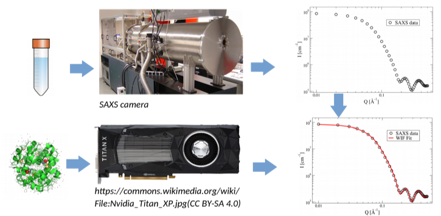

Small-angle X-ray and neutron scattering (SAXS, SANS) can be used to study the structure of macromolecules such as proteins in solutions on molecular length scales. The modeling of the scattered intensity can be done with the so-called Debye sum, a double-sum, which coherently sums up the scattered intensity from all atoms belonging to the macromolecular structure. Since the number of atoms N can be very large (typ. 104-105) and the summation is of complexity O(N2), different strategies must be applied to make the computations more efficiently. Besides looking at improvements of the underlying computational algorithm we are currently investigating the potential of using graphics cards to tackle the computational complexity. The currently used software, Will It Fit (WIF, written in C, Martin C. Pedersen et al J. Appl. Cryst. 46, 1894-1898 (2013)), which does the model calculations and fitting to experimental datasets can be run on multi-CPU systems using OpenMP parallelization. The aim of this project is to enhance the existing WIF code such that it can make use of the computational power of modern graphic cards and by this to facilitate the modeling of very large macromolecular assemblies such as insulin oligomers within reasonable time scales.
